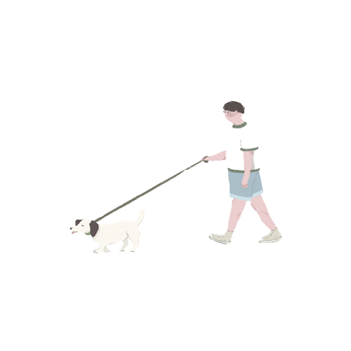
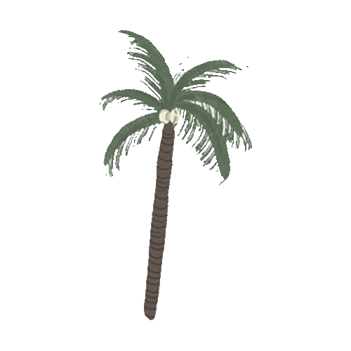
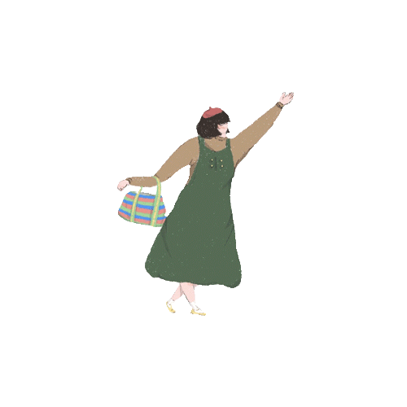
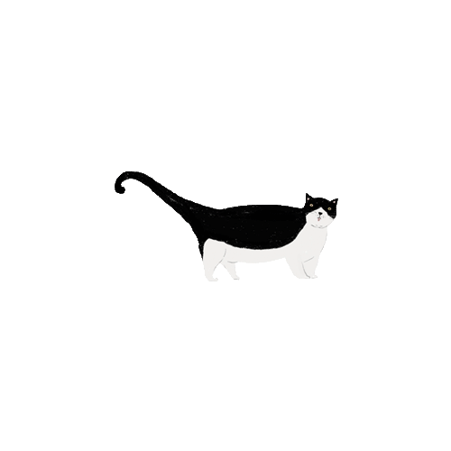
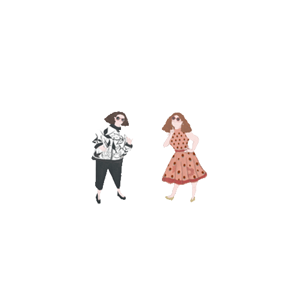
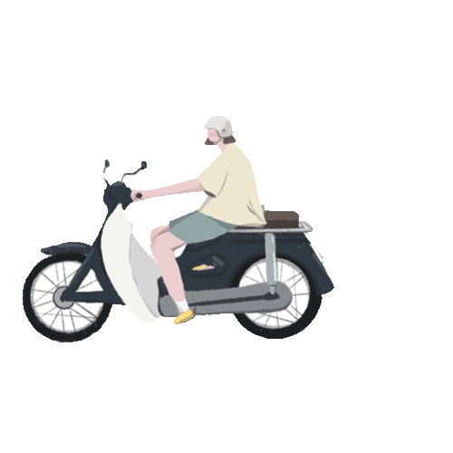
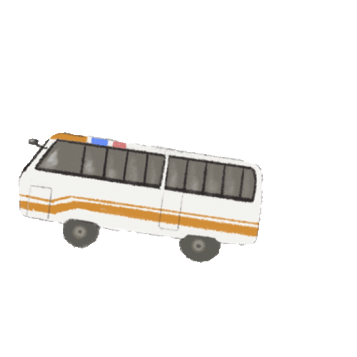
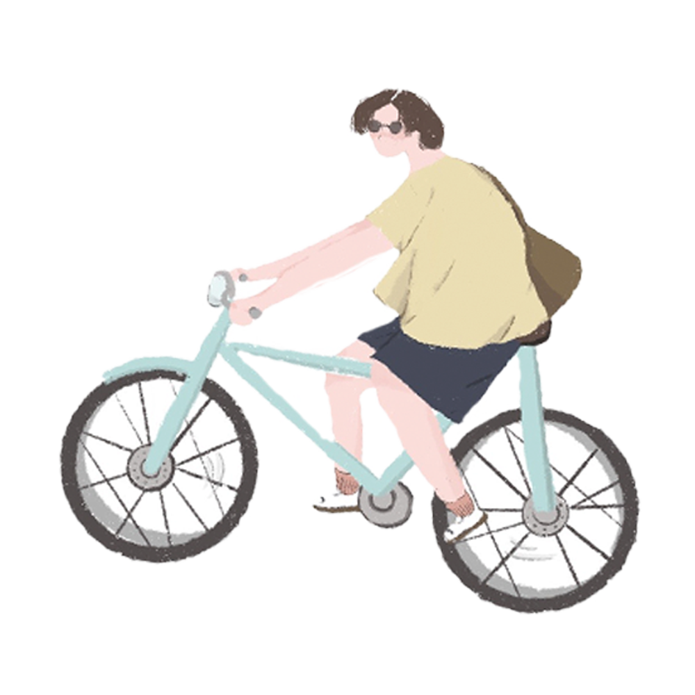
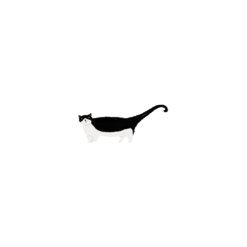
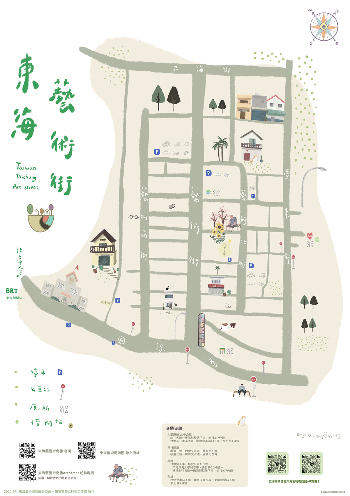

樺豐餐館
主鈴手創坊
東海里關懷據點
巫女奧達
明目書社
橘光呼嚕X背包Cat貓の咖啡館
合宣不動產
阿蘭貝爾 牛排廚房
印度市集
月冠瑪菲斯
小巷子
豆花
慕茗萊
花呆七號
北歐設計
生活民族
潘潘喜歡
伊凡生活家飾
KAKY
我的腳
艾凡里
墨爾本巷弄
咖啡地圖
李雲風情坊
Cozy Life舒適生活
忽若寓
小自在
蘇菠麵
東海漁村花園婚禮會館
小農木瓜牛奶
東海
國民小學
永宸室內設計
耶穌藝廊
和欣客運
停車場
二月山家
一閑
奇奕坊
龍井農會
小林眼鏡
小衣乙舖
康泉烘焙坊
美廉社
旭商電腦
東海里活動中心 •
天晶坊
藝術街停車場
李記珍愛
蘿蔔糕專賣店
瑋立珠寶
小狼多奇
戶外用品專賣店
阿達家族
花半開
S&N Hair Salon
頤億堂
禾藝
生活美學
佛羅倫斯
爾雅
茶堂
小自在
頂好
超市
大觀藝術坊
藝術山丘
時間軸咖啡
國際大藥局
